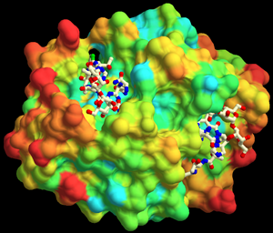
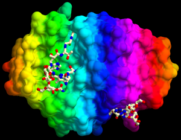

SASPaint
分子表面(molsurf)レンダラーの複雑な着色¶
分子表面（Solvent accessible surface; 溶媒接触表面？）を表示するレンダラーであるmolsurfレンダラーについては， チュートリアルの StepA4 分子表面(surface model)の表示と StepA5 表面電荷(electrostatic potential)の表示 で，
- 表面の表示方法
- べた塗り
- 表面電荷による塗り方
について説明しました．
ここでは分子のプロパティーに応じて着色する方法について説明します．
例としては，
Documents/QScriptのチュートリアル/StepA4のサンプルを変更したものを使用して説明します．
実行には，このページにあるQScriptファイル以外に，PDBやMSMSのファイルが必要です．
PDBやMSMSのファイルは上記ページからリンクされているサンプルファイル中の物を使用してください．
- 注意
- このページの機能を使用するにはversion 1.0.0.58以降のCueMolが必要です．
表面(Surface) objectを分子objectに接続する¶
具体的にやらせたいことは，
表面上の点から最も近い原子/残基/分子の情報に基づいてその点の色を決定する
ということです．
ところが，表面オブジェクト自体は分子に関する情報は何も持っていません （表面の座標などの情報しか持っていない）． そのため，その表面オブジェクトを生成した分子に関する情報で表面を着色したくても，表面オブジェクトだけでは出来ないわけです．
そこで，表面オブジェクトに（元になっている）分子オブジェクトを 接続（attach）することで，CueMolにどの分子の情報から着色するかを教えてやるわけです．
$r_sf.setProp("scalarobj", "blm_ab");
プロパティー名からは何か意味がわかりにくいですが大目に見てください((適当に拡張しているのがばればれですねぇ〜（汗）))． これで，レンダラー$r_sfは分子オブジェクト"blm_ab"から情報を得てpaintingする準備が出来ました．
原子プロパティーによって着色(simple coloring mode)¶
原子プロパティーによって着色するモードでは， 原子の
- 元素のタイプ
- 温度因子の値
- 占有率の値
に応じて色を設定できます（CPKやballstickレンダラーと同様）．
まず，表面オブジェクト自体の着色モードを変更します．
$r_sf.setProp("colormode", 2);
これで，原子プロパティーによって着色モード(simple coloring mode) になりました．
さらに，どういう原子プロパティーで着色するか（すなわち上記の1,2,3のどれか）を設定します．
$r_sf.setProp("simple.colormode", 0);
これで，元素タイプに応じて着色するモードになります．
実際のスクリプトの例は．．．¶
今までの設定をまとめると以下のようになるはずです．
$pwd = sys.getScriptPath();
<!!!!!!>
$surf = readMSMS($pwd+"blm.face", "surf");
$r_sf = $surf.createRend("r_sf", "molsurf");
<!!!!!!>
$mol = readPDB($pwd+"blm_ab_nosec.pdb","blm_ab");
<!!!!!!>
$mol.select(se/resn blm/);
$r_blm = $mol.createRend("r_blm", "ballstick");
$r_blm.setProp("sphr", 0.5);
$r_blm.setProp("bondw", 0.4);
<!!!!!!>
$r_sf.setProp("scalarobj", "blm_ab");
$r_sf.setProp("colormode", 2);
$r_sf.setProp("simple.colormode", 0);
<!!!!!!>
$mol.deselect();
gfx.setCenter($r_blm.getCenter());
gfx.updateView();
この例のファイル：

これは，Documents/QScriptのチュートリアル/StepA4の例を変更したもので， PDBやMSMSのファイルはこのページからリンクされているサンプルファイルを使用しています．
デフォルトでは，CPKタイプの色分けになっています． 元素ごとに変更するには，"simple.col_C"等のプロパティーを変更しますが， CPKレンダラー等と同じですので 詳細はDocuments/QScriptのチュートリアル/Step1を参照してください．
温度因子・占有率の場合¶
次に，温度因子で色分けして見ます．
"colormode"プロパティーを2にするところまでは前回と同じです． "simple.colormode"を1にすることで温度因子モードになります．（2で占有率モード） "simple.lowcol", "simple.highcol"で低い側・高い側の色を設定します．
$r_sf.setProp("scalarobj", "blm_ab");
$r_sf.setProp("colormode", 2);
$r_sf.setProp("simple.colormode", 1);
$r_sf.setProp("simple.lowcol", color(0,0,1));
$r_sf.setProp("simple.lowpar", 20.0);
$r_sf.setProp("simple.highcol", color(1,1,0));
$r_sf.setProp("simple.highpar", 80.0);
この例のファイル：

ballstickレンダラーの"coloring."と，"simple."が対応しています． 詳しくはDocuments/QScriptのチュートリアル/Step1"の 温度因子による色の設定"の節を参照してください．
分子の選択範囲に応じて着色(fancy coloring mode)¶
さらにややこしい塗り方をしたい場合には 分子の選択範囲に応じて着色モード(fancy coloring mode) を使用します．
$r_sf.setProp("colormode", 3);
"colormode"を3にすることで，fancy coloringになります．
このモードでは，select()で分子((当然attachしている分子でないと意味がない))の 特定部分を選択し，molvis.paint()で該当部分を塗る，というのを繰り返して 最終的な塗りを完成させます． まあ，やり方としてはDocuments/QScriptのチュートリアル/Step3の "2次構造ごとに色を設定"のと同様です．
例えば，アルギニン・リジンを青に， グルタミン酸・アスパラギン酸を赤に，その他を白に塗る場合は，以下のようになります．
$r_sf.setProp("scalarobj", "blm_ab");
$r_sf.setProp("colormode", 3);
$mol.select(se/resn ARG,LYS/);
molvis.paint($r_sf, color(0,0,1));
$mol.select(se/resn GLU,ASP/);
molvis.paint($r_sf, color(1,0,0));
$r_sf.setProp("fancy.default", color(1,1,1));
この例のソース：

なんかフランスっぽいですね． これだと，結構いろいろな塗り方を出来るわけですが，例えば二次構造に応じて塗ることなんかも出来ます．
この例のソース：

ただ，こんなんを使うシチュエーションがあまりないという話もありますが．．．
スクリプトによる着色¶
今までのどの方法でも気に入ったように塗れない場合は スクリプトによる着色しかありません． まあいわば，これは最終兵器みたいなもんです． CueMolが塗る色を決定する必要が出た場合にいちいちスクリプトが 呼ばれるので，ややこしいスクリプトを設定すればいくらでも ややこしい塗り方が出来るわけですが，はっきりいって遅いです． よって，この機能を使う場合は使う側も「まったり」と使う心がけが必要です．
まず，他の例と同様に分子オブジェクトにattachし，"colormode"を3 (fancy coloring mode)にします．
$r_sf.setProp("scalarobj", "blm_ab");
$r_sf.setProp("colormode", 3);
さらに，着色のためのスクリプト（関数オブジェクト）を設定します．
molvis.setScriptColoring($r_sf) ($atom, $res, $mol) {
...
}
この...の部分で色を決定してcolorオブジェクトをreturn文で返すようにします．
色の決定に必要な情報は，引数$atom, $res, $molに渡されます． $atomはatomオブジェクト，$resはresidオブジェクト，$molは分子オブジェクトが 入っています． たとえば$atom.bfac()メソッドを呼び出すと温度因子がreal（実数値）で返されます． 占有率は$atom.occ()で，位置は$atom.pos()で返されます．位置の場合はvector （ベクトル）で返されます．
これ以外に，関数オブジェクトが定義されているスコープから見える変数はすべて 使えます．
温度因子を使って多段階の着色¶
説明だけではわかりにくいと思いますので，温度因子を使った着色のサンプルを説明します． 温度因子を使って着色するのはsimple coloring (colormode==2)でもできますが， これだとある色から色までの１段階のグラジエントにしかできません． ここでは，５段階に分けた色のグラジエントで着色してみます．
$r_sf.setProp("scalarobj", "blm_ab");
$r_sf.setProp("colormode", 3);
<!!!!!!>
local $col1 = color.hsb(180, 0.8, 1.0);
local $col2 = color.hsb(135, 0.8, 1.0);
local $col3 = color.hsb(90, 0.8, 1.0);
local $col4 = color.hsb(45, 0.8, 1.0);
local $col5 = color.hsb(0, 0.8, 1.0);
<!!!!!!>
molvis.setScriptColoring($r_sf) ($atom, $res, $mol) {
local $bfac = $atom.bfac();
if ($bfac<10.0)
return $col1;
else if ($bfac<20.0)
return color.gradient($col2, $col1, ($bfac-10.0)/10.0);
else if ($bfac<30.0)
return color.gradient($col3, $col2, ($bfac-20.0)/10.0);
else if ($bfac<40.0)
return color.gradient($col4, $col3, ($bfac-30.0)/10.0);
else if ($bfac<60.0)
return color.gradient($col5, $col4, ($bfac-40.0)/20.0);
else
return $col5;
};
上記スクリプトファイル：

{kind=link}
{kind=link}
{kind=link}
{kind=link}
説明しますと，まずモードを設定しています． 次に各段階の色を$col1〜$col5に代入しています． それぞれの色($col1〜$col5)を関数オブジェクトの外で定義しておくと， 関数オブジェクトが呼ばれるたびに同じcolorオブジェクトが 作られては破棄されというのを繰り返さずにすむので， 少々高速化になるわけです．
さらに，molvis.setScriptColoring()メソッドで，$r_sf(molsurfレンダラー)に 関数オブジェクトを定義して設定しています．
関数オブジェクトは，
$atom, $res, $mol
の三つの引数をとります．この順番が重要です．
さらに，$bfacに温度因子を代入し，if文で温度因子の範囲により条件分岐しています．
ここで，color.gradient()メソッドはグラジエント色を作成するメソッドです．
color.gradient($arg1, $arg2, $param)
$paramは0から1までの実数値を指定します．$arg1, $arg2はグラジエントの端点での色を指定します．すなわち，
- $param≦0 → $arg2で指定した色
- 0<$param<1 → $arg1$param + $arg2(1-$param)
- 1≦$param →$arg1で指定した色
というふうになります．
結局，この例では以下の表のようなcolorオブジェクトが作成されることになります． ||50||50|c |温度因子|>|>|CENTER:色|h |10以下|>|>|BGCOLOR(#00FFFF):| |10〜20|BGCOLOR(#00FFFF):|〜|BGCOLOR(#00FF40):| |20〜30|BGCOLOR(#00FF40):|〜|BGCOLOR(#80FF00):| |30〜40|BGCOLOR(#80FF00):|〜|BGCOLOR(#FFBF00):| |40〜60|BGCOLOR(#FFBF00):|〜|BGCOLOR(#FF0000):| |60以上|>|>|BGCOLOR(#FF0000):|
そして，分岐先ごとにreturn文でcolorオブジェクトを返しています． 結果として，以下のような感じになるはずです．
 ;
{kind=link}
この機能を使えば，他に原子のx座標で色分けしたりも出来ます
 ; が，あんまり意味がないですね．この例のスクリプトのソースは，以下になります．
{kind=link}